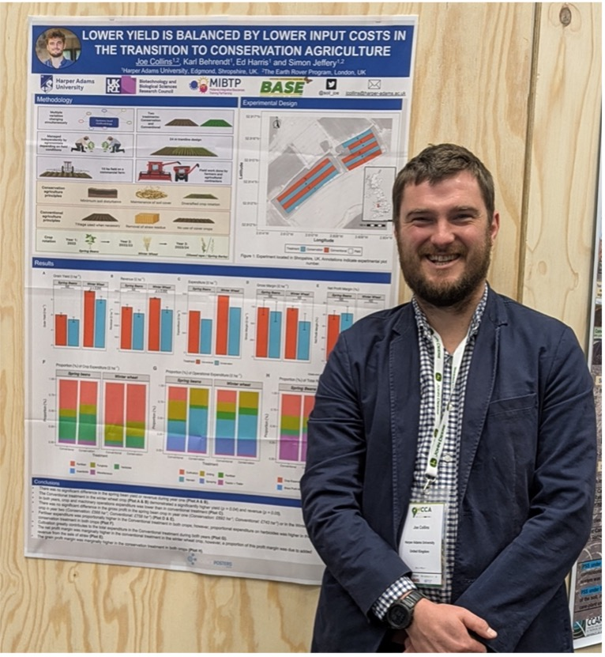
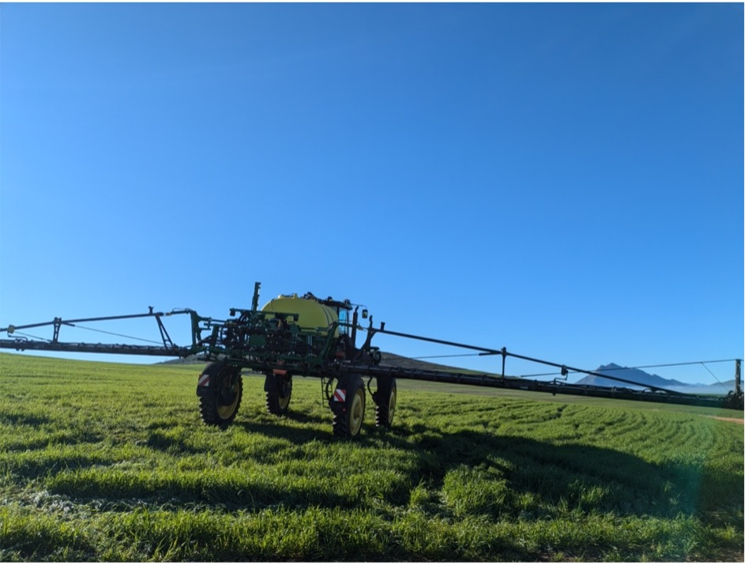

World Congress of Conservation Agriculture Report
01 Inroduction
Firstly, I wanted to introduce myself to the BASE-UK members. Recently, an experiment I set up in Shropshire as part of my PhD has been sponsored by BASE-UK. The experiment’s premise is to evaluate Conservation Agriculture using a systems-level methodology. In layman’s terms, this means that agronomists manage the experiment, farmers conduct all the fieldwork, and therefore, the inputs and decisions are industry practice. I hope this experiment can provide BASE members and the wider farming community with data that they may find helpful for their business decisions. Watch this space, as I hope to update you regularly with any developments and talking points from the experiment. In addition, I will be presenting the experiment results at the next BASE-UK conference, so I look forward to meeting some of you in person. This newsletter will focus on my recent trip to the World Congress of Conservation Agriculture.

02 World Congress of Conservation Agriculture
From 22nd – 25th July 2024, I attended the World Congress of Conservation Agriculture held in Cape Town, South Africa to present some of my economic research from my PhD. This was the first time I had participated in this conference and the first time I had been to South Africa, so it’s fair to say I was pretty excited before the trip! As I am approaching the end of my PhD now, with only six months to go after four years of work, I wanted to present and be a part of this conference as a culmination of my PhD journey. It was a conference that I had had my eye on for some time, as I knew it would be a scientific conference with a real focus on the practical application of new agricultural technologies and methodologies, something I am particularly passionate about. A great mix of farmers, agronomists, farm advisors, and researchers (and just about every profession in between) from all over the world attend. As such, there were some fascinating talks and panel discussions during the conference about every aspect of Conservation Agriculture, from the successes to the practical, social, and political difficulties of implementing Conservation Agriculture in many farming contexts.

Beyond the official sessions, one of the most valuable aspects of the Congress was the opportunity to network and exchange ideas with peers from across the globe. I met several farmers practising Conservation Agriculture in their respective regions. One discussion that stood out was integrating cover crops in no-till systems under different climatic conditions. I found it interesting how South African farmers adapt these practices to their unique climate, including periods of intense drought followed by sudden heavy rains. The adaptability and creativity shown by farmers in areas with challenging climates reinforced the importance of context-specific solutions in agriculture.
While the Congress provided a wealth of knowledge, it also highlighted the ongoing challenges we face in promoting Conservation Agriculture. The transition from conventional farming practices is challenging, particularly in regions where policy support is lacking or where farmers face financial and technical barriers. However, the research and innovation evidenced at the congress give me hope that we can overcome these challenges together as an industry.
03 Whats next?
As I return to the UK, I am eager to apply the knowledge and connections gained from the Congress to my own research and to share these insights with the BASE-UK community. I’m confident that by working together and learning from global experiences, we can continue to advance Conservation Agriculture practices here at home.
In the coming months, I will focus on my PhD’s final stages. Still, I’m excited to keep you updated on my research progress and continue contributing to the conversation on sustainable farming. Please feel free to reach out if you have any questions or if there are particular topics you would like me to explore in future newsletters.
Thank you for your continued support, and I look forward to connecting with many of you at the next BASE-UK conference.
Joe Collins Senior Research Associate and PhD Candidate Harper Adams University